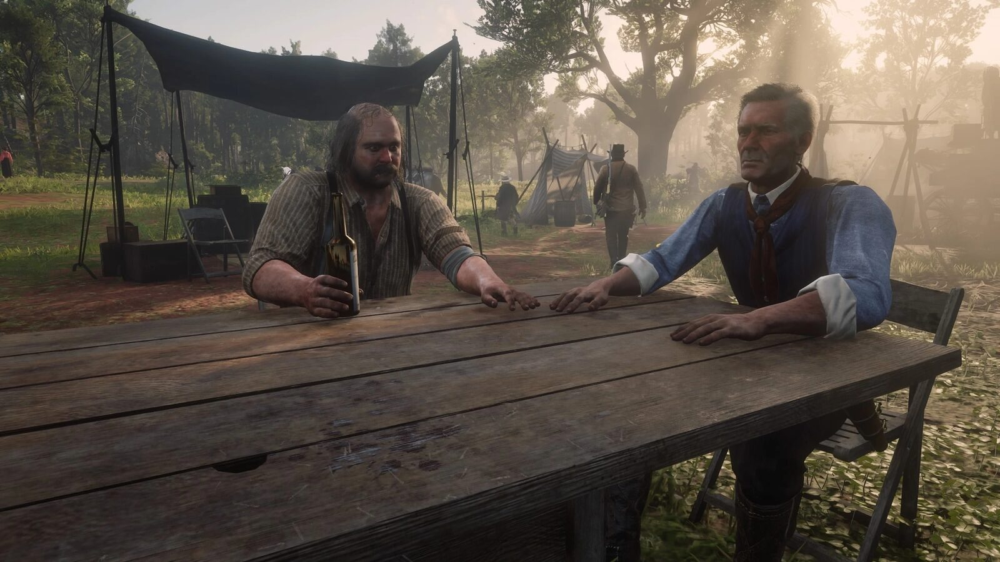
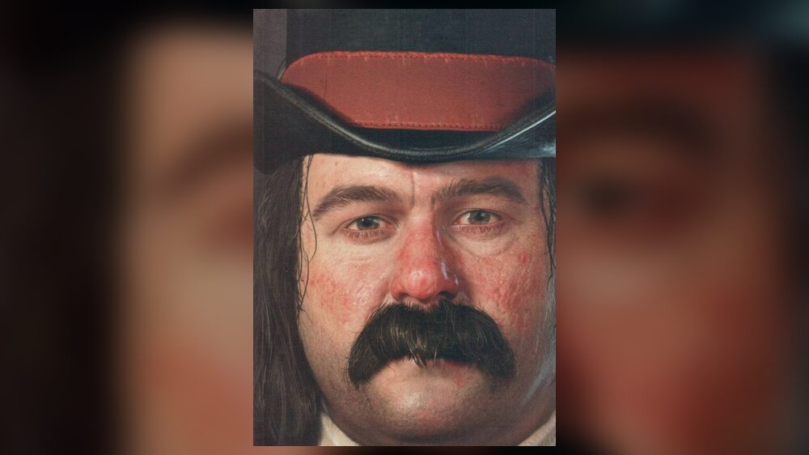
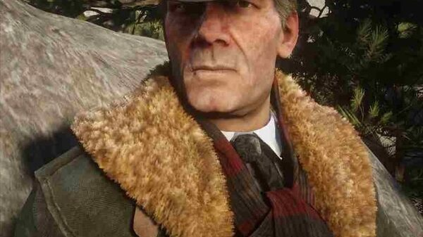
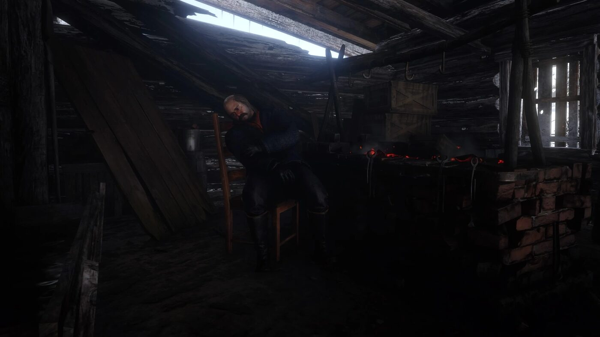

Character · Van der Linde gang
Simon Pearson
Simon Pearson is the cook and butcher of the Van der Linde gang in Red Dead Redemption 2. A former US Navy sailor from a family of whalers, he runs the camp's chuckwagon and crafts the gang's satchels from the pelts Arthur brings in.
The gang took him in after saving him from loan sharks, and he became their provisioner.
- Affiliation
- Van der Linde gang
- Role
- Cook and butcher
- Status
- Alive (survives RDR2)
- Past
- Former US Navy sailor
- Games
- Red Dead Redemption 2
Biography
The camp cook
Pearson runs the stew pot and the camp's crafting, turning donated perfect pelts into satchels up to the Legend of the East Satchel. In Chapter 3 he clashes with Sadie Adler over being stuck cooking, and later relays the O'Driscoll parley that Micah pushes, which turns out to be a trap.
Leaving the gang
At Beaver Hollow, Susan Grimshaw orders Pearson and Bill to burn Molly O'Shea's body. He leaves the gang with Mary-Beth Gaskill and Uncle, and Dutch brands him a coward for it.
Fate
Pearson survives Red Dead Redemption 2. In the epilogue he runs the general store in Rhodes, married to a woman named Ethel, and keeps a photograph of the gang by his counter. John can visit him there.
Relationships
Susan Grimshaw
Fellow camp manager, forever pushing back at his self-pity.

Hosea Matthews
The gang elder he gets on with, often sharing a joke.

Arthur Morgan
The hunter he relies on to keep the camp fed.
Behind the scenes
Simon Pearson appears in Red Dead Redemption 2 (2018). He is voiced by Jim Santangeli.
Trivia
- He has a Navy anchor tattoo and is nostalgic for Navy rum.
- He crafts the gang's satchels, including the Legend of the East Satchel.
- He is one of the few members never shown committing a crime beyond gang association.
Gallery
